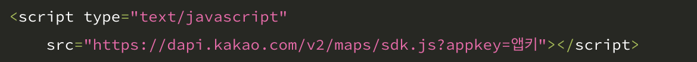
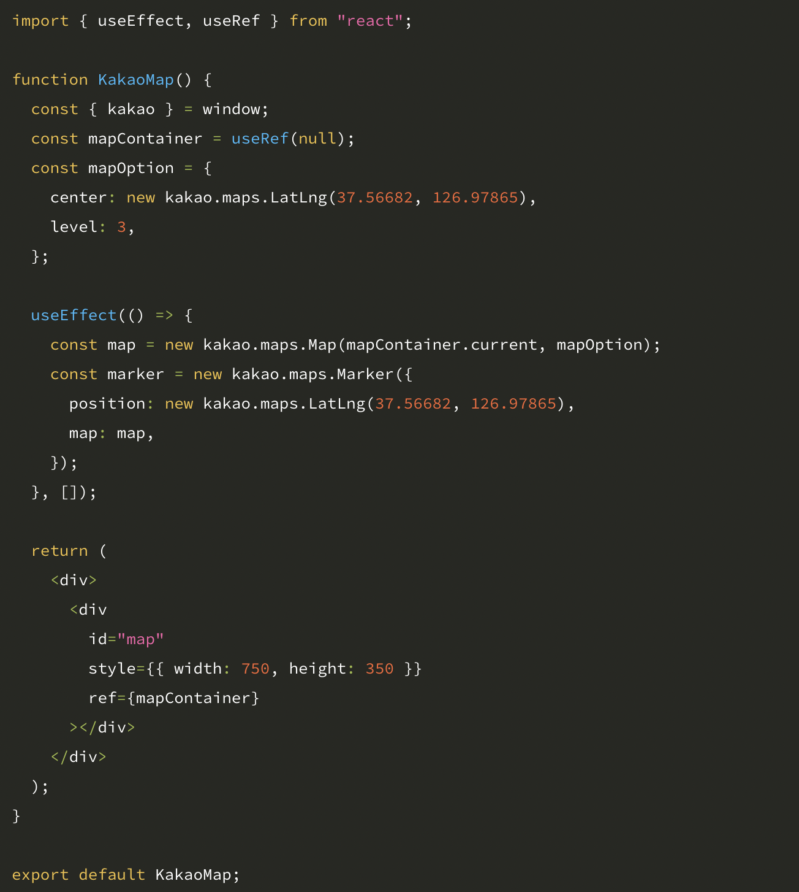

작업 후 깃허브에 push했을 때, process.env.PUBLIC_URL를 이용한 public 폴더 안 이미지, background-imgae에서 static/media로 설정된 이미지만 안 보임.
→ 이미지경로를 github page주소로 변경하여 관리.
자바스크립트와 kakao api를 가지고 오는 방식이 달라서 구글링을 오래도록 했다.
  이 방법을 통해 해결.
react는 깃허브에 올리지 않는 이상 보이지 않아 카카오 api 홈페이지에서 http://localhost:3000 을 추가해 바로 확인할 수 있게 했다.
가장 메인이 스와이퍼를 통한 구현이었이었으나 사진이 나오지 않았다. src 폴더에 이미지를 넣어 변수명을 지정한 뒤에 불러오는 방식을 썼으나 사진이 나오지 않았음.
이후 public으로 사진을 이동해 절대 경로로 지정하니 사진이 나옴.
처음에는 리액트의 편리성에 대해서 인식하지 못한 채로 수업에 임했습니다.
정신없이 나뉘는 수많은 컴포넌트는 분명히 큰 혼란을 초래했지만 점차
그 편리성을 깨닫게 되었습니다.
수없이 변화하는 웹사이트를
관리하기엔 최적의 라이브러리라는 것을 깨닫게 되었습니다.
처음으로 리액트를 통해 만들어 아직은 미숙하지만 리액트의
꽃인 로그인이나 회원가입 등 데이터를 다루는 것을 접목시켜
활용하고자 합니다.